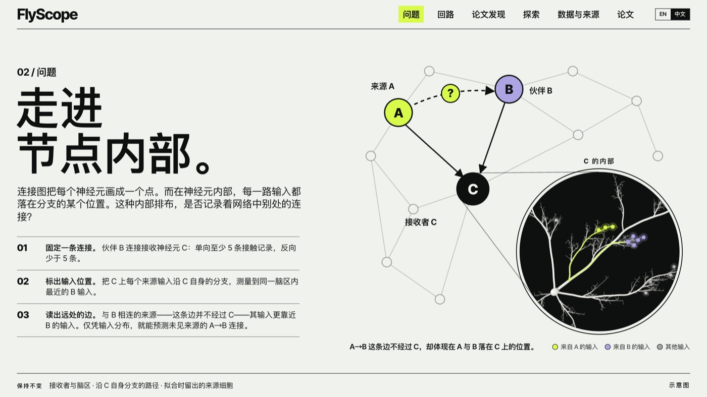

共同接收者中的突触组织预测输入神经元之间的连接
Synaptic organization in shared receivers predicts connectivity between input neurons
Zhang X · 在投稿件 2026 · 原文链接
一句话
在两个成年果蝇连接组中，相连输入源的突触在共同接收神经元上靠得更近，这种空间信息可帮助预测未见过的输入神经元之间的连接。
VIDEO讲解视频
文字稿
连接组，是一个神经系统里所有神经元和连接的地图。通常，每个神经元被画成一个点，连接就是点之间的边。 但真实的神经元，是一棵伸展的树。输入信号通过突触，落在不同的枝条上。 画面里，是一个成年果蝇大脑的完整连接组，每一条细线，都是一个神经元。 同样来自两个输入、同样多的突触，可以挤在同一根小枝上，也可以分散在相距很远的分支上。 可在连接图里，这两种情况一模一样，位置的信息就被丢掉了。 这项研究要检验的是：输入落在哪里，能告诉我们网络里别处的连接。 这一期分四部分。 第一部分，三细胞的问题设定，以及距离怎么量。 第二部分，两个逐步收紧的检验。 第三部分，用位置信息预测从没见过的连接。 第四部分，意义和局限。 先看第一部分。三个细胞：输入源甲和乙，都向同一个接收神经元丙发出连接。右边是丙的树突，也就是它接收输入的枝条。 能看到的，是丙的树突上，哪些突触来自甲，标成黄色；哪些来自乙，标成紫色。 在电子显微镜重建出的神经元上，每个突触的位置都能被一一标出来，就像画面里这样。 真正关心的，是甲到乙这条连接。注意，它的两个端点都不在丙身上。 如果甲到乙存在，三条边就构成一个前馈环。这项研究要做的，是只看丙身上的输入分布，去读出这条看不见的边。 前馈环是一种常见的网络基序。网络基序这一页有画面上的交互演示：在基因调控里，前馈环能过滤掉太短的输入脉冲。 一条连接，至少要有五条接触记录才算存在。这个阈值贯穿整项研究。 接收者选的是果蝇的下行神经元。它们从脑一直延伸到腹神经索，身份可以辨认，输入又很丰富。 下行神经元把大脑的指令传给控制腿的神经，比如让果蝇开始走路。画面里，是果蝇大脑和身体的三维重建。 然后是距离。这里不用直线距离，而是沿着神经元的骨架，也就是树的中轴线，走过的最短路径，就是这条绿色的路。 骨架本身就是一棵树。所以这其实就是网络里的最短路径问题，只不过边长是真实的物理长度。 对甲的每一个输入位置，找到离它最近的乙输入，量出这段路径，就是这些黄色的路。 写成公式，就是右上角这个式子。 x 是甲的一个输入位置；P 是乙落在丙上的所有输入位置。在这些位置里取最近的一个，量沿骨架的距离。 下面进入第二部分，第一个检验。先固定一条连接：乙连向丙，两者都是下行神经元。 再把丙的其他输入源分成两组：同时也连向乙的，叫共享源，标成黄色；不连向乙的，叫其他源，标成灰色。 比较的是：哪一组的输入，离乙的输入更近。画面是示意。 这张图，每组柱子的高度是平均路径距离。在第一个连接组的一万三千多条连接里，共享源是六十点八微米，其他源是七十点二微米，近了九点四微米。 在独立重建的第二个连接组里，是五十一点四对五十九点四，近了八微米，方向一致。 按接收者来看，八成以上是这个方向。注意，也有红色这部分相反的例子。 举一个具体的环路。在咽下神经节里，十二个共享源的输入，平均距离是十点七微米，其他输入是十九微米。 但不同的源，本来就可能落在接收者的不同位置。所以第二个检验，把甲在丙上的输入完全固定，就是这些黄点。 只换伙伴：紫色是收到甲连接的伙伴，青色是完全没收到甲连接的伙伴。 还有一个隐蔽的偏差：伙伴在丙上的位点越多，最近距离自然就越小。你看，位点从两个加到十六个，最近距离一直在缩短。 所以把参照位点统一成三个，用右上角这个式子来算。 它的意思是：从伙伴的所有位点里任取三个，求最近距离；再对所有三点组合取平均。这样，位点多少就不再影响比较。 这样比较，在第一个连接组里，相连伙伴近了九点一四微米，九百二十二个接收者中，有七百四十九个方向一致。 在第二个连接组里，近了十点一五微米，五百八十九个接收者中，有四百八十三个一致。 下面进入第三部分，预测。用两百个源细胞之间的连接训练模型，再用另外两百个、完全不重叠的细胞来测试。 左边的计数模型，只用四个特征，比如各自给丙多少输入、丙有多大；右边的空间模型，再加入距离和离散度，一共二十个特征。 连接很稀疏。测试集里真正相连的，也就是正例，只占百分之三到四。 平均精度，衡量的是把候选连接按预测概率排序以后，排在前面的有多少是真的。随机排序时，它约等于正例的比例。 这张图，纵轴是平均精度，虚线是随机水平。第一个连接组里，加入空间特征后，从零点零八九升到零点一六一。 第二个连接组，从零点零六九升到零点一一四。 不过，每个连接组只做了一次划分，这个对比没有给出置信区间。 最后是第四部分。这项研究提醒我们：哪怕在突触级的连接组里，把神经元压缩成一个点，也会丢掉信息。 在脑影像的网络分析里，节点是脑区。节点内部的空间组织，同样可能携带连接的线索。 局限也要看清。第一，这是一篇还在投稿中的稿件，尚未经过同行评审。 第二，相关不等于因果。三个细胞的枝条在同一区域交汇，既容易形成连接，也会让输入靠近。 第三，每个果蝇连接组只来自一只动物；线虫数据方向相同，但接收者很少；另一种海洋蠕虫的幼虫只有四条连接，方向也不一致。 一句话：神经元不是一个点，输入落在哪里，也反映着网络的结构。 好，我们来总结一下。 第一，相连的输入源，它们的输入在共同接收者上靠得更近，两个果蝇连接组方向一致。 第二，固定输入位置、统一参照位点数以后，这个关系依然存在。 第三，加入位置信息，能改善对从没见过的神经元之间连接的预测。
一句话看懂
连接图只记录“谁连着谁”，却丢掉了输入落在接收神经元树突上的位置。这篇论文发现：如果两个输入源 A、B 彼此相连，它们在共同接收神经元 C 上的输入往往靠得更近。在 MaleCNS 和 FlyWire 两个成年果蝇连接组中，这种靠近平均约为 9.4 μm 和 8.0 μm；把这类空间特征加入预测模型，对两个从未参与训练的输入神经元之间是否相连的判断明显变好，平均精度从 0.089 提高到 0.161（MaleCNS）、从 0.069 提高到 0.114（FlyWire）。
研究背景与问题
连接组：结构连接与功能连接中把连接组抽象成图，每个神经元是一个没有内部结构的点。但真实神经元是空间中伸展的树状结构：同样来自 A 和 B、同样数目的突触，可以落在 C 的同一小枝上，也可以分散在相距很远的分支上，连接图对两者一视同仁。
“物理网络”（physical network）理论主张把空间伸展的节点本身也看成网络。秀丽隐杆线虫上的已有工作（Ruach 等）发现，共享邻居更多的神经元，其突触在共同目标上更靠近。尚未回答的问题有两个：在固定输入位置之后，这种关系是否仍然存在？它能否用来推断之前没见过的神经元之间的连接？
论文选择果蝇的下行神经元（descending neurons, DN）作为接收者。DN 连接脑与腹神经索，身份可辨认、输入汇聚丰富，适合作为“共同接收者”。
核心思想与方法

三细胞设计：共同接收者与输入源对
三细胞构型：输入源 A 和 B 都向接收神经元 C 发出连接。可观测的信息是 C 上按来源标记的突触后位置（source-labelled input map）；要研究的是 A→B 这条连接。A→B 的两个端点都不在 C 上，但 A、B 都是 C 的直接上游邻居，所以这是一个局部的三节点问题。
连接阈值：一条连接至少有 5 条已发布的接触记录（contact record）才算存在；1–4 条的情形在不同分析中或归入“其他”，或直接排除。
如果 A→B 存在，A→C、B→C、A→B 三条边正好构成网络基序：自调控与前馈环中的前馈环。论文问的是：只看 C 身上的输入分布，能否读出前馈环中那条“不经过 C”的边？
路径距离
路径距离：把突触后位置投影到 C 的重建骨架（skeleton）最近的顶点上，沿骨架计算最短路径长度 ，单位为 μm。对固定的 B→C 连接和脑区 ，源输入位置 到最近一个 B 输入的距离为
其中 是 B 在区域 内落在 C 上的输入位置集合。参照输入必须与源输入属于同一个脑区标签。
神经元骨架本身是一张树状图，路径距离就是路径、距离与最短路径算法中的最短路径，只是边长为物理长度。改用欧氏距离，结论方向不变。
第一步：比较不同输入源（源间比较）
固定一条单向 DN 连接 B→C。向 C 输入的非 DN 源分成两组：共享源（同时给 B 至少 5 条记录）与其他源（给 B 的记录少于 5 条）。对每条连接，计算两组源输入到最近 B 输入的平均路径距离之差（共享减其他）。负值表示共享源的输入更靠近 B 的输入。
第二步：控制混杂——固定源输入位置
不同的源落在 C 上的位置本来就可能不同。第二步因此固定源 A、接收者 C 以及 A→C 的全部实际输入位置，只改变伙伴 DN：
- 与 A 相连的伙伴 B（收到 A 至少 5 条记录）；
- 替代伙伴 B′（收到 A 的记录为 0）；收到 1–4 条的伙伴排除。
两类伙伴都向 C 输入，并限定在同一脑区、C 骨架的同一连通分量内。
另一个混杂是伙伴在 C 上的位点越多，“最近距离”自然越小。论文因此标准化参照位点数：从伙伴的 个不同位点中无放回均匀抽 3 个，计算到最近者距离的期望。按距离排序 ，第 近的位点成为三者中最近者的概率是 ，于是
这是对所有三点子集的解析平均，不是挑最近的三个点，也不引入随机抽样误差。
第三步：预测未见过的输入神经元之间的连接
这一步 A、B 都是非 DN 输入源，C 仍是 DN。用 200 个源细胞之间的有向对训练，用另外不相交的 200 个源细胞测试，测试对的两个端点都没参与拟合。目标是 A→B 是否达到 5 条记录；A→B 的接触本身不在 C 上，也不进入预测特征。
- 计数模型（4 个特征）：A→C 记录数、B→C 记录数、C 上可见输入记录数、C 骨架长度；
- 空间模型（20 个特征）：在上述 4 个之外加入两源各自的空间离散度，以及 A、B 输入之间的欧氏距离和骨架路径距离摘要（最小值、第 10 百分位、中位数、近距离位点对比例等）。
两者都用 L2 正则化逻辑回归。每个可用的共同接收者给出一个概率，再对该源对的所有接收者取平均。
平均精度（average precision, AP）：把候选连接按预测概率从高到低排序，沿精确率–召回率曲线做阶梯式求和。随机排序时 AP 约等于测试集中正例的比例。连接稀疏时，AP 更能反映排在前面的候选有多少是真的。
主要发现
- 相连输入源的输入更靠近伙伴的输入。MaleCNS 13,318 条连接中，共享源与其他源的平均路径距离为 60.77 μm 对 70.18 μm，差值 −9.42 μm（95% 区间 −10.52 至 −8.31）；FlyWire 5,807 条连接中为 51.37 对 59.36 μm，差值 −7.98 μm（−9.27 至 −6.70）。按接收者平均，差值为负的比例为 82.7%（1,079 个）和 80.7%（720 个），但也有方向相反的个例。
- 一个可辨认的环路。上行神经元 AN19B014 同时连接 DNge006 和 DNge072，而 DNge006 也连向 DNge072。在咽下神经节（GNG）中，这对 DN 的 12 个共享源（含 AN19B014）的输入到最近 DNge006 输入的平均距离为 10.7 μm，其他非 DN 输入为 19.0 μm。
- 固定源输入位置后关系仍然存在。MaleCNS 中与源相连的伙伴为 64.40 μm，零输入伙伴为 73.54 μm，差值 −9.14 μm（−11.21 至 −7.07），922 个接收者中 749 个方向一致；FlyWire 中为 62.79 对 72.93 μm，差值 −10.15 μm（−12.15 至 −8.14），589 个中 483 个一致。
- 空间特征改善对新细胞连接的预测。测试集正例比例只有 4.30%（MaleCNS）和 3.08%（FlyWire）。加入空间特征后，平均精度从 0.089 升至 0.161、从 0.069 升至 0.114；对数损失从 0.184 降至 0.165、从 0.142 降至 0.125；补充材料中 AUROC 从 0.677 升至 0.800、从 0.712 升至 0.807。
- 覆盖范围有限。39,800 个有向候选中，只有 30,702 个（MaleCNS）和 21,822 个（FlyWire）有可用的共同接收者图谱而被打分；其中 79.6% 和 72.7% 综合了至少两个接收者。
- 其他物种只是探索性证据。两个成年秀丽隐杆线虫重建中，固定源比较的差值为 −9.88 μm 和 −5.39 μm，但只有 10 个和 13 个接收者，其中一个源间比较的区间跨过 0。Platynereis 幼虫只得到 4 条合格连接，方向不一致（平均 +6.09 μm），不能视为重复验证。
怎样读这篇论文
- 阅读顺序：先读摘要和引言末段，弄清 A、B、C 的角色如何变化（前两个分析中 B 是 DN 伙伴，第三个中 B 是非 DN 源），再按图 1 → 图 3 顺序读结果并对照方法。
- 图 1：a 是源间比较示意；b 是 DNge072 上的真实输入分布（橙点为共享源，灰点为其他输入，青色三角为 DNge006 输入）；c 是两组距离的累积分布；d 是每个接收者的差值分布，重点看负值占多数但并非全部。
- 图 2：每个点是一个接收者，横纵轴分别是零输入伙伴和相连伙伴的距离，落在对角线下方表示相连伙伴更近。
- 图 3：精确率–召回率曲线，虚线是正例比例（随机水平）；d、e 两个柱状图给出对数损失和平均精度。注意图注写明这一对比没有置信区间和显著性检验。
- 可以先跳过：补充材料中的 DN 互连预测与腹神经索输出分析，它们回答的是不同问题。线虫与 Platynereis 见 Supplementary Note 8。
用 FlyScope 对照论文自己探索。配套网站 FlyScope 有中英文界面。建议这样用：
- 先看首页的 Circuits 与 Paper findings 部分，它用 AN19B014–DNge006–DNge072 环路演示“共享输入”，对应图 1b；首页神经元图为示意画法。
- 打开论文示例环路，切换到 Shared input 视图，看 DNge072 骨架上来自共享源与其他源的输入点，自己判断它们与 DNge006 输入的远近，再和论文的 10.7 μm 对 19.0 μm 对照。
- 在 Explore 的神经元库里按类型或 ID 搜索其他 DN，查看伙伴列表和共享输入比较，挑一对相连的 DN 重复观察，体会“总体方向一致但有反例”。
- 网站还有 FlyWire、线虫和 Platynereis 页面，可对照主要发现第 6 条。单个环路的印象不能替代总体统计。
局限与后续工作
- 这是在投稿件，尚未经过同行评审。方法、数字和结论都可能在审稿后修改；早期版本以 “Synaptic placement reflects shared input in Drosophila descending neurons” 为题发布在 arXiv 上，内容与本文有差别，引用时请以正式发表版为准。
- 相关不等于因果。作者在讨论中明确指出，解剖机会可能是共同原因：A、B、C 的树突和轴突在同一区域交汇，既容易形成 A→B 连接，也会让 A、B 的输入在 C 上靠近。固定源输入位置、标准化参照位点数缩小了比较范围，但没有匹配更细的分支水平接触机会。结果与解剖约束、选择性布线或两者兼有都相容。路径距离是几何量，不直接等于电学上的整合效果。
- 样本单位。每个果蝇数据集只代表一只动物，区间描述的是连接组内部变异，不是个体间变异。
- 预测的边界。训练与测试细胞不相交，但类型可以重叠，接收者已知；每个连接组只做一次划分，对比没有区间估计；无共同接收者图谱的候选对不在评估之内。空间模型的优势也还不能拆分到“离散度”或“相对距离”。
- 后续方向（作者提出）：在新的接收者群体上检验、重复多次源划分、评估单个接收者的预测能力，并在保持分支水平接触机会的前提下比较分支内位置。论文也指出，只匹配连接与接触数目的连接组生成模型未必能重现这一关系。
关联知识
- 连接组：结构连接与功能连接介绍了微观尺度连接组。本文提醒我们：即使在突触级连接组里，把神经元压缩成“点”也会丢掉信息。
- 路径、距离与最短路径算法中的最短路径：路径距离是神经元骨架这棵加权树上的最短路径。
- 网络基序：自调控与前馈环：A→C、B→C 加上 A→B 构成前馈环。本文可以理解为用节点内部的空间信息去预测前馈环中缺失的那条边，也是一种链路预测问题，并与共同邻居类方法有相通之处。
延伸思考
- 论文用“到 3 个随机参照位点的期望最近距离”标准化。如果不做这一步，伙伴输入位点数的差异会怎样让结果产生偏差？试举一个具体情境。
- 作者认为解剖机会可能同时导致 A→B 连接和输入靠近。请设计一个分析或实验，尽量区分“解剖约束”与“选择性布线”两种解释。
- 空间模型把 AP 从 0.089 提高到 0.161，而随机水平约为 0.043。你如何向一位实验神经科学家解释这一提升的实际意义？它能否直接用来指导电生理验证？
- 在人脑 MRI 连接组中，节点是脑区而不是神经元。“节点内部的空间组织携带网络信息”这一思想，在宏观尺度上可能有什么对应物？